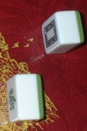

今年の６月、オランダのナイメーヘンという街で、中麻(ちゅんま)の第１回ヨーロッパ選手権が行われる。
※ヨーロッパ選手権の公式HP
今回紹介するのは、そのヨーロッパ選手権で使用される牌。

台湾製のプラスチック牌で、多少大振り。厚みもしっかりある。そこで中麻には使いやすいと思われる（日本麻雀では、ちと扱いにくいかも）。

この牌、ヨーロッパ選手権の使用牌であるにもかかわらず、外国向けの定番であるアラビア数字のインデックスがない。これは“インデックスは、牌の美しさを損なう”ということで、わざわざインデックス無しの牌が選択されたらしい。
これだけのことなら、単に“台湾製の上等な牌”というだけのことであるが、この牌の命は花牌にある。花牌だけは、順序を示すためインデックスが刻まれているが、デザインはこの大会用に特別に考案されたもの。
デザインしたのは、オランダ麻将連盟会長のMartin
Rep氏の実兄、Jelte Rep氏。各牌に刻み込まれているOEMCは、Open European Mahjong Chanpionshipの頭文字。
青１はDutch cheese(オランダチーズ)、青２はtulip(チューリップ)、青３はwooden shoes(木靴)、青４は cow(雌牛)。赤１の旗はEuropean flag(欧州連合旗)。赤２の橋はWaal Bridge of Nijmegen(ナイメーヘンにあるワーレン橋)。赤３はVereeniging Nijmegen（ナイメーヘンの会場)。赤４は、オランダを象徴する風車。いずれもオランダ、あるいはナイメーヘンを象徴している。
ナイメーヘンの会場
このセットは、第１回ヨーロッパ選手権＝オランダ大会のために必要な数だけ製造された。大会が終了すれば参加者や関係者に記念品として分けられることがあるかもしれないが、基本的には非売品。このセットの価値は、そこにある。
＃そんな牌がなぜココにあるかというのはヒミツ....（^-^；
オマケ
第１回ヨーロッパ選手権を記念して、切っ手も発行されるとか。
|